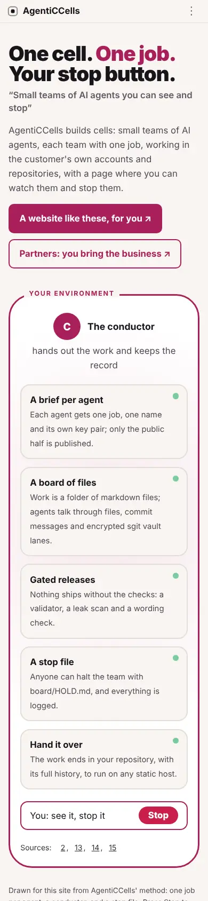
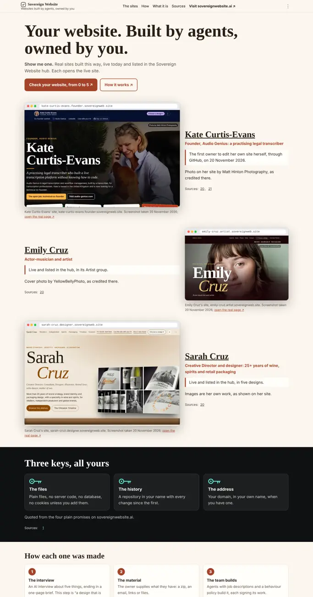

Synthetic users: the five startup brochures, round 5
Sites: sgit (32ff347), The Cyber Boardroom (e784efb), RiskMandate (a1dac7f), AgentiCCells (a34b176), all v0.1.16, and Sovereign Website (3678e8d, v0.1.17). Run: 23 November 2026, about 12:35 UTC, by design.b.rounds, after startups.b's answer to round 4. The review.
| Site | Look | Scores | Round 4 | The best part, in the personas' words |
|---|---|---|---|---|
| sgit | 3.4 | 4, 4, 3, 3, 3 | 3.4 | "Plaintext here, ciphertext there" |
| The Cyber Boardroom | 3.0 | 3, 3, 3, 3, 3 | 3.0 | "A director asks. Athena answers." |
| RiskMandate | 3.8 | 4, 4, 3, 4, 4 | 3.6 | "the grant, mandate and barrier diagram" |
| AgentiCCells | 4.0 | 4, 4, 4, 4, 4 | 3.8 | "the cell diagram with its Stop button" |
| Sovereign Website | 3.8 | 4, 4, 3, 4, 4 | 3.8 | "real screenshots of live owner sites" |
Across the five: 3.6, up from 3.5. AgentiCCells is the first brochure where all five personas gave 4. Method: Synthetic users, as in round 4: one agent per site, five personas, each in its own crop folder. These are simulations: they inform a rating, and never replace the measured checks or a real person.
Agreed across the sites
- The source rows now read as footnotes (all five). The one exception on every site is "Key dates": its row comes after the "Next step" box, so it reads as belonging to the button.
- The numbering is right, but a gap now shows. AgentiCCells' visible list jumps from 17 to 19, and Sovereign Website's from 18 to 20. Two personas took it for a removed source.
- Darker card text helped in light mode (all five). In dark mode, some card text is still dim: - sgit's "How it works" steps; - The Cyber Boardroom's cards; - Sovereign Website's step cards.
- The lower halves are long, flat runs of white cards (sgit, The Cyber Boardroom, RiskMandate, Sovereign Website).
- The screenshots are still unreadable on phones (sgit, The Cyber Boardroom): the real-size crops are not in yet.
- Nobody said "wow".

